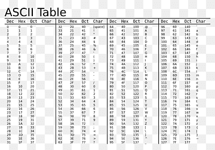

Het binaire stelsel is de basis van computers en digitale technologie. In het decimale stelsel zitten er tien cijfers maar, het binaire stelsel gebruikt er maar twee cijfers: 0 en 1. De cijfers 0 en 1 noemen we bits. Bits worden gebruikt om informatie op te slaan, te verwerken en te versturen in computers en andere digitale apparaten, zoals een playstation of een telefoon.
Als je 8 bits bij elkaar zet, krijg je een byte. Met een byte kun je bijvoorbeeld letters, cijfers of kleuren opslaan. Kortom, bits en bytes zijn de bouwstenen van hoe digitale informatie werkt en verwerkt wordt in onze moderne apparaten.
De ASCII-tabel(hier onder te zien.) is een systeem dat getallen geeft aan symbolen zoals letters, cijfers en letters in computers. De ASCII-tabel heeft in totaal 128 verschillende tekens. Over de hele wereld gebruiken computers en systemen de ASCII-tabel om tekst weer te geven. Elke letter, cijfers, etc heeft een eigen getal in de tabel. Bijvoorbeeld, de letter A is het getal 65. Dit systeem gebruikt binaire codes van 7 of 8 bits om deze tekens op te slaan. ASCII staat voor: American Standard Code for Information Interchange.
